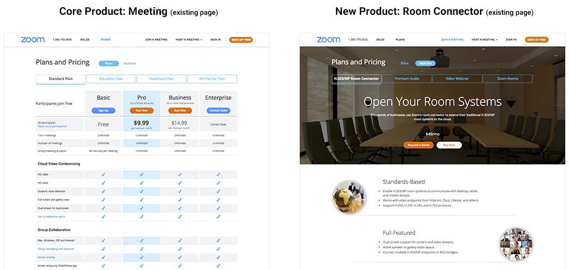
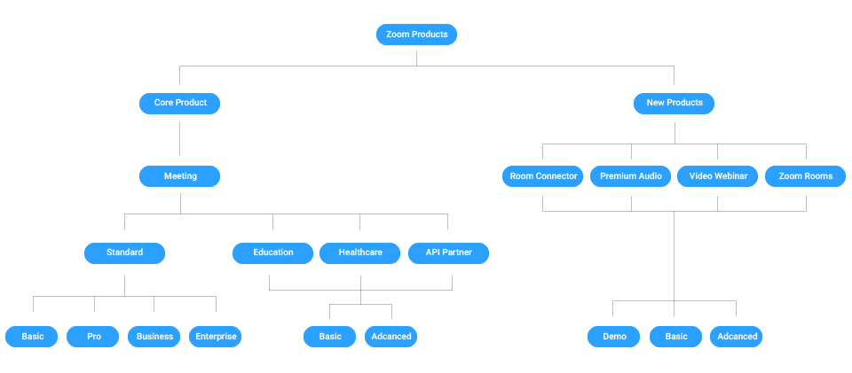
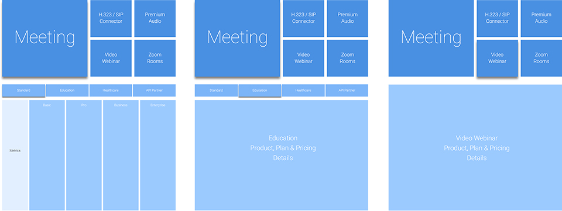
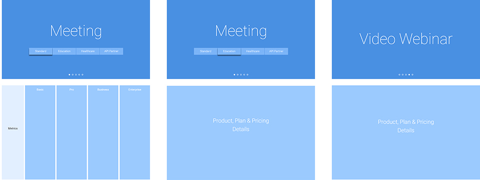
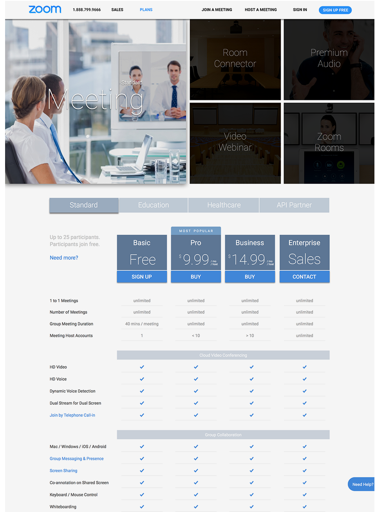
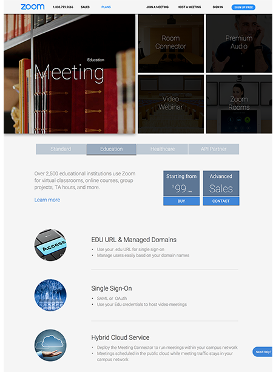
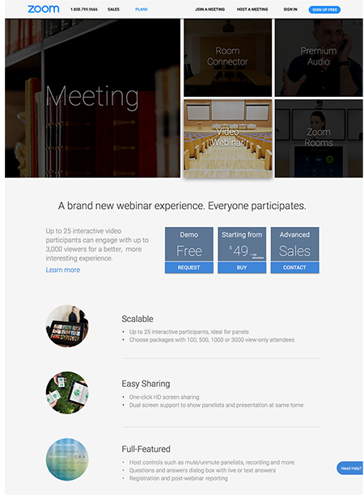
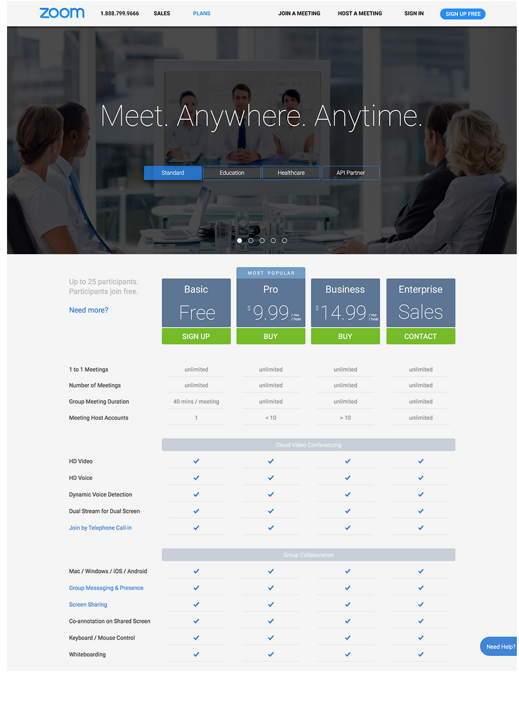
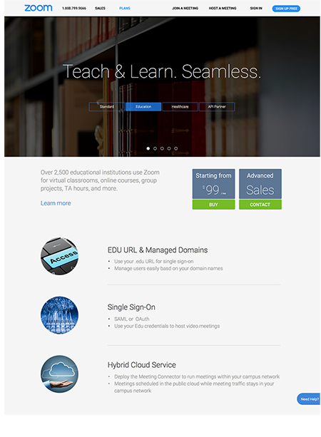
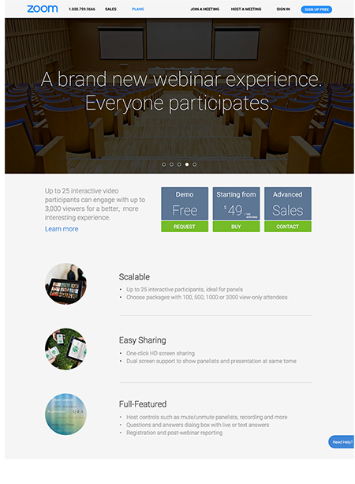

Overview
This is a freelancing design for Zoom Video Technologies.
I worked as the sole UI/UX Designer on this project. I collaborated with PM, UX Researchers and engineers on the whole design and development process. All wireframes, mockups and visual assets were designed and created by me.
The design helped Zoom establish a clear and well-organized navigating, selecting and paying experience for over 24 kinds of enterprise and consumer products and plans.
User Problem
Starting from 1 product with 3 plans in 2011, Zoom Video has expanded its product lines to 5 categories, 8 service types and over 24 kinds of free and paid plans. The complexity and variety of all Zoom's plans make it very difficult for users to understand and select the right product and the right plan immediately and effectively. Three problems of the old Zoom's home need to be solved through this new landing-page design:
1. Unclear and patched product categories and plans
2. Effectively but invisible accesses to certain products
3. Inconsistency and fragmentation of different product pages

Design Goal
To address the existing page's user experience problems, the design goals are divided into three steps:
1. Establish clear hierarchy of products and plans
2. Establish consistent UI structure and visual design
3. Create visible, effective and clean visual elements
Product Hierarchy & Site Maps
Before diving into actual design, I firstly organized all of Zoom's products and established a clear hierarchy, which also led to the site maps of landing page.

Wireframes of Different Levels
Based on the product hierarch, two options were explored for different user interactions and interface layouts.
Option 1:
Tile + All-at-once

Option 2:
Slideshow + Immersive

Mockup
The final mockups' visual elements were designed and tweaked according to each option's focus and interaction logic.
Option 1:
Tile + All-at-once



Option 2:
Slideshow + Immersive


